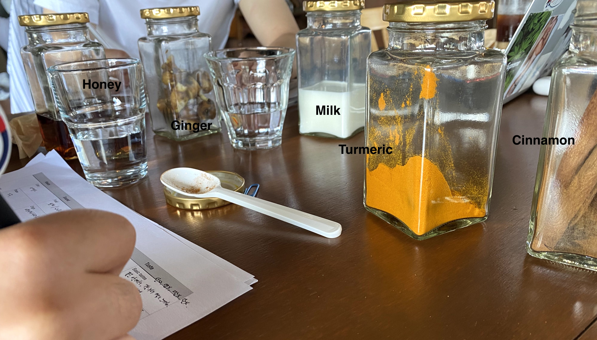
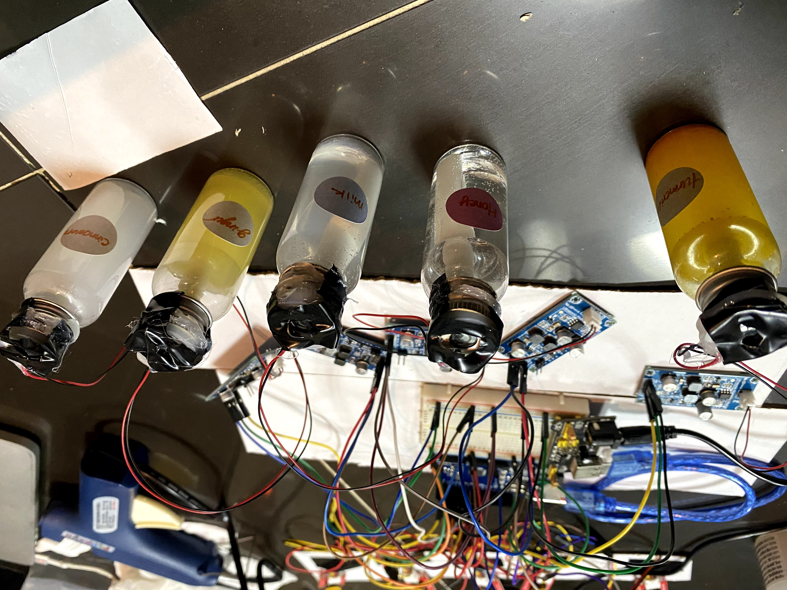
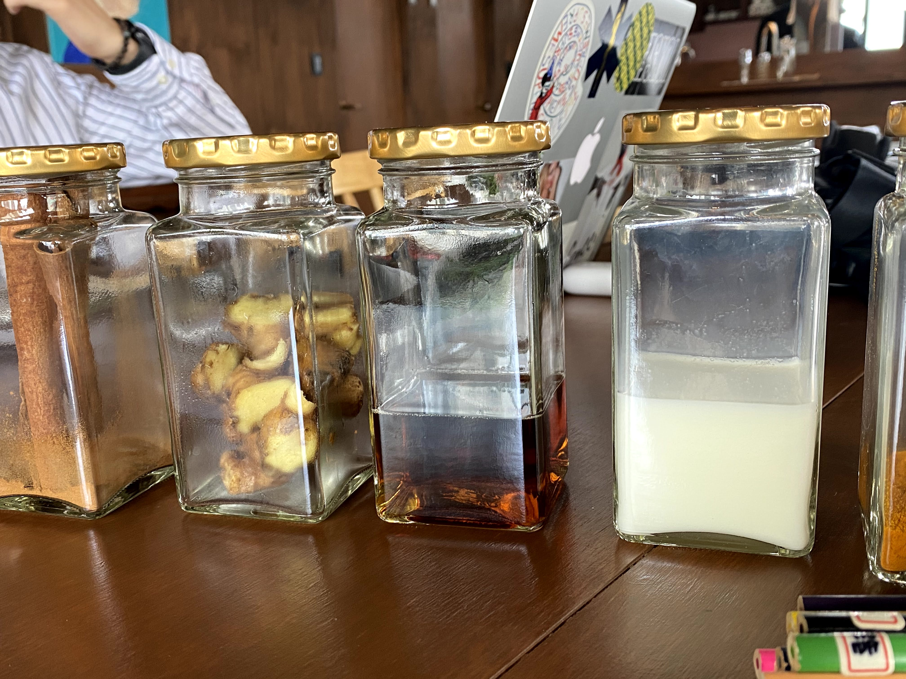
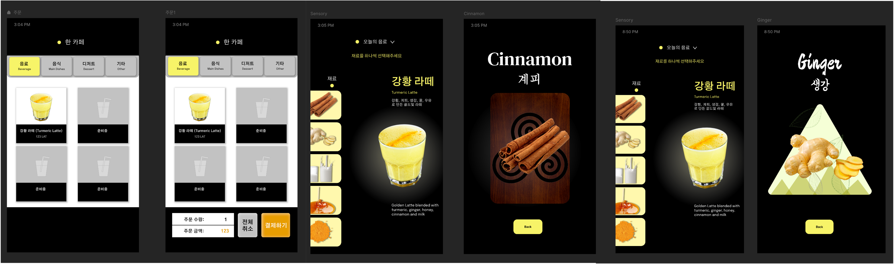
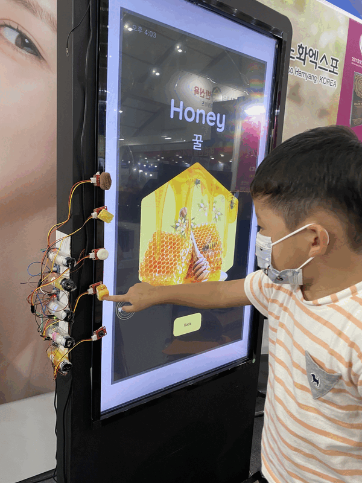
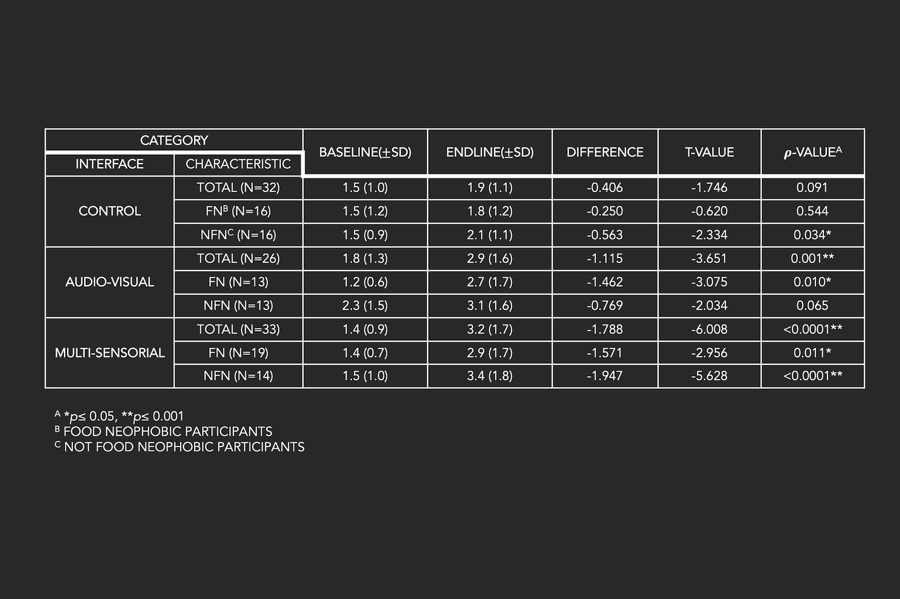
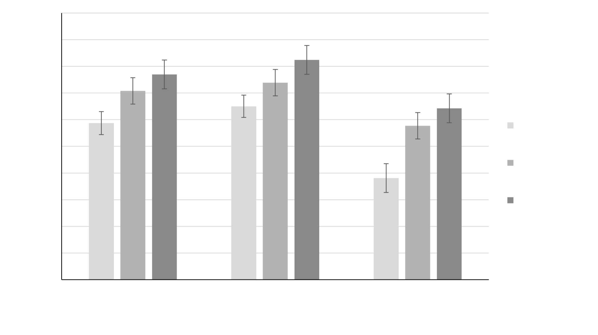

Building a food kiosk that exudes non-tasting sensory modalities
Submitted to International Journal of design
We are only provided with menu picture and name at a shop or a restaurant. For
people who have
extreme aversion to novel tastes, getting them to consume novel foods requires costly nutrition
programs or policies. I tried to build a food kiosk that disseminates universal flavor information
with a multisensory design.

Flavor Understanding without Tasting
Sensory Workshop & Multisensory Design Framework
I have chosen an unfamiliar food item that is also healthy and antioxidant, a turmeric latte, designed a
novel sensory
workshop to extract necessary design requirements, and observed unfamiliar food flavor perceptions.

Design Engineering
Mechanical & Interface Prototyping
Ingredient Exposure was devised as the user touches each presented ingredient. For audio stimulation, it
was transmitted through embedded
speakers, tactile through molding texture, and olfactory diffused through Arduino humidifier module.
Multiple sensory modalities implemented into
everyday food selection process
"We are normally so prone to eat what we always eat, but the blame is partially on that we have no
choice but to rely only on the name and picture of the menu at restaurants and cafés when ordering
foods." (p. 20, multisensorial)
Sensory exposure prior to direct consumption
Food Familiarity and Food Neophobia
Those who present repulsion toward unfamiliar foods are food neophobic.
Without invoking the distress of trying the food, prior exposure to non-tasting introduction leads
to a smoother transition and a higher willingness to try, especially given that the hardest trait in
food neophobia is to get to try the food.

Design Requirement Extraction
Two design majors and two food and nutrition majors who have no food allergies to
the item and its ingredients—turmeric, cinnamon, honey, ginger, and milk—were recruited for the
workshop. They were engaged in one session each, two people at a time, and spent around 45 to 60 minutes
completing the worksheet.
Vision Color, shape, typography, imagery
Sound Food sound, origin sound, associative music
Smell General smell, origin smell, imagery
Touch Temperature, texture, shape-feel
Taste General taste, pleasure, imagery
Multisensory Design
Sensory Workshop
Sensory Design Framework via Literature Review
Workshop (2 food major, 2 design major participants) and design
requirements
Prototyping
Kiosk touch-screen display prototyping
Mechanical protyping on remaining sensory modalities
Experiment
Field experiment design on general public including food
neophobic
Quantitative and qualitative analysis, evaluation
Sensory attributes extracted from the
workshop were incorporated into devising a multisensorial interface.
After the participants completed all workshop sessions, modalities were
collected and organized according to the design requirements. The multisensorial modalities of a
novel food item were devised on a kiosk machine.

Visual attribute
On-screen Interface Design
I have chosen an unfamiliar food item that is also healthy and antioxidant, designed a novel sensory
workshop to extract necessary design requirements, and observed unfamiliar food flavor perceptions.
Olfactory attribute
Mechanical Prototyping
Ingredient Exposure was devised as the user touches each presented ingredient. For audio stimulation, it
was transmitted through embedded
speakers, tactile through molding texture, and olfactory diffused through Arduino humidifier module.
Auditory attribute
On-screen Interface Design
I have chosen an unfamiliar food item that is also healthy and antioxidant, designed a novel sensory
workshop to extract necessary design requirements, and observed unfamiliar food flavor perceptions.
Tactile attribute
Mechanical Prototyping
Tactile stimulations were formulated through modeling clays, resin, and appropriate ornamental
components, each fixed with a tact switch attached to the pertinent ingredient.

Experiment Design
Field experiment on general public
The experiment was a between-subject design, consisting of three experimental conditions according
to the interface type (control, audio-visual, multisensorial). The experiment was situated in a
local expo in South Korea, an open space with guests visiting the expo for sight-seeing.
Experiment procedure
After entering the booth, participants were told that they were to evaluate a drink
called ‘turmeric latte’. They were then asked to complete a three-question questionnaire on their
baseline familiarity with the drink, liked tastes, and disliked tastes. After the experiment,
participants were given out a post-experience questionnaire on the
endline familiarity, satisfaction level, and willingness to try the drink.
Demographic Data
There was a total of 91 participants (female = 58), of which 32 were the control,
26 were the audio-visual, and 33 were the multisensorial groups. The age of the participants varied
between 4 and 70 years old, with a mean of 33±14.8 years, 34±15.9 years, and 31±16.7 years
13
old in respective groups. Out of them, 47% (n = 43) exhibited food neophobia, knowing a score of 38.6 or
above is considered neophobic.
Quantitative Analysis
Field experiment on general public
The experiment was a between-subject design, consisting of three experimental conditions according
to the interface type (control, audio-visual, multisensorial). The experiment was situated in a
local expo in South Korea, an open space with guests visiting the expo for sight-seeing.
Food familiarity
The baseline results showed that most participants in all groups were unaccustomed
to the food item, showing an overall mean of 1.5±1.0 out of 6. After conducting paired t-tests on food
familiarity baseline and post-experiment endline data, while the control group had no statistical
significance in the
improvement of food familiarity (𝜌 = 0.091), the audio-visual group presented a significantly high
improvement of food familiarity (𝜌 = 0.001), and so did the multisensorial group (𝜌 0.0001).

Willingness to try. Satisfaction Level.
ANOVA showed that there was a statistically significant difference in the
willingness to try the novel item between at least two groups (F(2,88) = [4.663], 𝜌 = 0.012). Tukey’s
HSD test for multiple comparisons revealed that the multisensorial interface elicited a greater intent
to try the food than did the control interface, with a significant difference (Tukey’s post hoc test 𝜌
= 0.009, 95% C.I. = [0.190,1.631]).

Qualitative Analysis
Control, Audio-visual, Multisensorial
Qualitative analysis was performed on the full interview data after transcription, emotional
adjective assessment, and the ranked sensory intensity. The data were then sorted and coded through
thematic grouping.
All interfaces and their characteristics are collectively shown in the table below.
Initial Thoughts
As witnessed from the quantitative analysis, the mean baseline familiarity of
the drink was 1.5 out of 6, regardless of the later-encountered interface. It showed that most
participants equally agreed that the drink was simply unknown. Prevailing emotions toward the drink were
discomfort, confusion, and unfamiliarity.
“…isn’t latte supposed to be soft and sweet? With milk or coffee? It just seemed like turmeric will go
nowhere in between, because it’s probably some kind of herbal plant” (participant p. 20, audio-visual).
Control
Participants in the control group agreed that there were barely any differences
between the interface and previously used self-ordering kiosks and deemed them very similar. The
participants did not have a significant increase in their food familiarity or statistical significance
in their willingness to try or their satisfaction level.
“Reason I’d like to try? Well… because it’s new. I like to take adventures so if it’s new, I’d try it”
(p. 11, control).
Audio-visual
The audio-visual interface enabled the exposure of ingredients through an
interactive selection and exertion of corresponding visual and auditory stimuli.
The participants said that when they noticed familiar ingredients from the ingredient list, they felt a
stronger sense of comfort and perceived it as less familiar correspondingly.
“Reason I’d like to try is because it looks sweet. It’s not like I normally like sweet stuffs. But it’s
mainly because by at least knowing how it’ll taste, my distrust toward this drink is lightened." (p. 9,
audio-visual)
Multisensorial
The multisensorial interface was evaluated as mainly fun, interesting, easy to
use, and able to ‘heighten the level of understanding.’ The interface was implemented with all four
sensory stimuli: vision, smell, touch, and sound, of which smell seemed to have shown the strongest
stimulation.
“What do I think of the interface… well, it’s obvious that for unfamiliar items like this, it helps us
have better idea about it and picture the taste without even knowing what it is…Now I actually wish this
drink was out in the market for me to try." (p.33, multisensorial).
Discussions
Efficacy of sensory exposure.
Non-tasting element exposure has been an emerging theory to be effective for
food
neophobia for years, but it was yet to be experimented. Multisensory
exposure through vision, sound, smell, and touch can elicit higher willingness to try and
considerably improved food familiarity at a certain novel item.
Educational aspect of multisensory interface.
A nutrition and education professional commented such multisensory
experience can simultaneously be an education on technology uses on younger audiences, and not
just a food education.
Further usages.
Most participants established that a multi-sensorial experience gives an opportunity for an objective decision making, better understanding on the novel food and drastically improved familiarity.
Multisensory approach in HCI Multisensorial integrations can set guidelines for a stimulative and informative strategy to arouse curiosity to try new food sources in the future or assist those in need of sensory complementation.